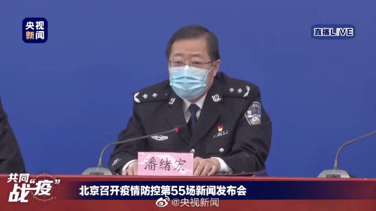

被公司开了，工作类签证失效。出门在外一定多一事不如少一事，你不知道会引起什么后果@央视新闻:【警方：#澳大利亚籍拒绝隔离女子被要求限期离境#】北京市公安局副局长潘绪宏：3月15日，北京朝阳公安分局接某小区卫生防疫工作人员报警称，一女子拒不配合社区防疫工作。经核查，梁某妍，女，47岁，澳大利亚籍。其行为在网上曝光后，所在公司对其辞退处理。18日，北京市公安局出入境管理局依据相关规定，决定依法注销梁某妍工作类居留许可、限期离境。 央视新闻的微博视频 575万次播放 03:19
2016年4月1日，我们结束了从2015年9月开始的恒生买入周期。之后至今整整四年，除了两次高抛低吸，再无加码。过程中最高收益率接近60%。到了今天，2020年3月19，恒生跌回当初位置，我们再次加仓，在这个估值，技术都合适的时候。一直想继续买，但依然等了四年。这份耐心，恐怕万里无一。
桥水的全天候，在正常情况下问题不大。但是在极端情况下，除了现金所有资产都跌，那么这个策略也很难独善其身。我一向认为，仓位管理非常重要。现金在组合中占的比重值得研究和重视。现金大多数时候确实会拖后腿，但关键时候可以保命。我个人感觉，自己对于左侧的研究已经遇到天花板了。下一步要更多精力研究右侧。当出现意料之外情况的时候，如何调整仓位。
美国国债也撑不住了 评论配图 //@ETF拯救世界:回复@丫丫背后的女人:黄金只在危机开始阶段有点作用。危机深入后，它所谓的避险属性就会失效。中后期只有国债和现金不跌，甚至最后只有现金不会跌。//@丫丫背后的女人:黄金避险属性完全失效@ETF拯救世界:美元白银网格可以先暂停了。